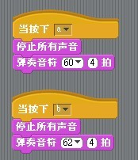
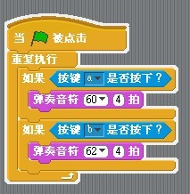
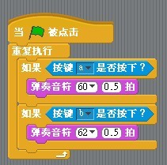

可以像真实的钢琴一样弹奏吗？
#1 可以像真实的钢琴一样弹奏吗？ 作者：有志青年 发表时间：2013-3-27 10:06:44
思考题：声音模块弹奏音符，默认都有个x拍的时长，而我们实际在弹琴的时候键按下去就一直有音，也就是时长是按键长。是否可以实现？

方式1，将节拍默认设置为4拍，并停止之前的声音
效果，60%符合要求，但音之间的切换不够自然，有时需要等之前的音结束才行，应该不是在播放声音是并行判断的

方式2，在一段代码中来判断，同样设置为4拍
效果，不符合要求，必须上一个4拍结束才能切换

方式3，在一段代码中来判断，设置0.5拍
效果，60%符合要求，如果持续按住a键，会明显听到多次声音（不是延音）
目前的结论：无法实现，只能限定音长。
如果是这样，就无法用这个钢琴弹奏出可以听的音乐（有哪首歌的每个音都是固定音长？）
#2 Re:可以像真实的钢琴一样弹奏吗？ 作者：有志青年 发表时间：2013-3-28 16:55:21
对此问题的思考，我走入了死胡同，所谓音长，可以理解为音a响起到音b响起之间的时长，也就是按下键盘a松开后到按下键盘b之间的时长。
至于耳边是否一致有音a萦绕？我们的听觉本身貌似能解决。
照此理解，将所有音长默认设置为0.5节拍，如果少于这个节拍，如0.25拍的音，就在按下a后，0.25秒之后按b，如果是1拍，那就1秒之后按b。